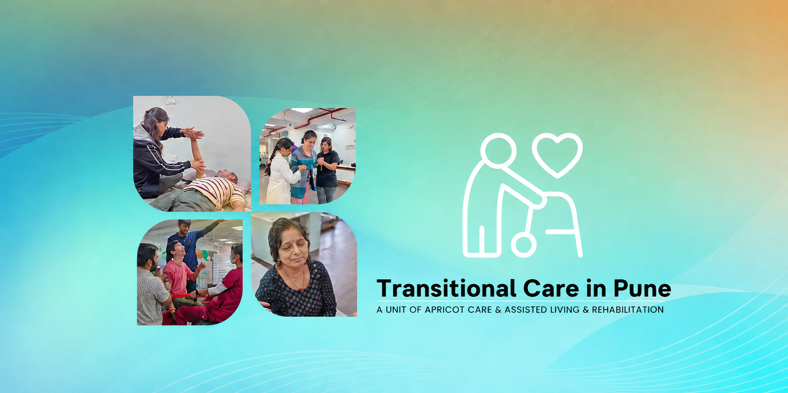

Transitional Care in Pune, Expert Post-ICU & Post-Surgery Recovery


When a patient is discharged from the ICU or hospital after surgery, stroke, or a serious injury, they often reach a difficult in-between stage, too stable for the ICU, but too vulnerable to go home. This gap is called transitional care. At Apricot Care Assisted Living and Rehabilitation, Pune, we provide structured, medically supervised transitional care that bridges this exact gap, with 24/7 nursing, specialist physiotherapy, and complete clinical monitoring under one roof.
If you are searching for the best transitional care in Pune for your loved one, Apricot Care is where recovery happens safely, systematically, and with the full support of an experienced multidisciplinary team.
What Is Transitional Care? The Step Between Hospital and Home
Transitional care is a short-term, medically supervised recovery programme for patients who have been discharged from the ICU or hospital ward but still require clinical observation, active therapy, and nursing support before returning home safely.
Think of it as the bridge between your hospital stay and your home, a professionally managed environment where patients continue to heal, rebuild strength, and regain function, without the risk of going home too soon.
This phase of recovery is critical. Patients who skip proper transitional care are significantly more likely to be readmitted to the ICU or emergency department within 30 days, a situation that is medically dangerous and emotionally exhausting for families.
At Apricot Care, our transitional care programme in Pune is not a waiting room. It is an active, goal-driven recovery environment with a dedicated clinical team working every day to get your loved one back home, safely and with confidence.
Who Needs Transitional Care Services in Pune?
Transitional care at Apricot Care is recommended for patients recovering from:
Post-ICU discharge- after stroke, brain injury, respiratory failure, or sepsis, Patients coming from our stroke care and rehabilitation programme often move directly into transitional care for continued recovery.
Post-surgical patients- who have undergone orthopaedic, spinal, cardiac, or abdominal surgery. Our postoperative care in Pune team coordinates this transition directly with the hospital.
Trauma and accident injuries- For people who need ongoing check-ups, wound care, and physical therapy to start moving again.
Neurological events- Patients recovering from a brain injury, mini-stroke (TIA), Parkinson's episode, or a sudden drop in physical abilities often need extra support. If they are in our neuro care program, we provide a smooth transition right after hospital discharge.
Spinal cord injury- For patients who need intense physical therapy before they can safely go back home.
Tracheostomy & Ventilator Care- Patients weaning off ventilators require precise respiratory monitoring. Our specialized tracheostomy care team manages this delicate transition seamlessly within our clinical program
Knee and hip replacement patients- Who need structured physiotherapy and observation before going home, see TKR/THR knee and hip replacement care.
Post-cancer surgery or chemotherapy- For patients needing physical and nutritional backup after cancer treatments, our oncology rehabilitation team provides comprehensive, supportive care.
Senior patients with complex medical Needs-When an elderly family member has complicated health conditions, caring for them at home without medical help can be unsafe. Our specialized senior care team in Pune provides the 24/7 clinical oversight they need to stay safe and comfortable.
If your doctor has said "your patient is stable but not yet ready for home", that is precisely when Apricot Care's transitional care in Pune begins.
Book a Free ConsultationOur Transitional Care Services at Apricot Care, Pune
We offer a complete, multidisciplinary transitional care programme, not just nursing, but a full spectrum of rehabilitation and medical services, coordinated by specialists and reviewed daily.
24/7 Nursing & Medical Supervision
Our qualified nursing staff monitors vitals, medications, wound care, catheter and IV management, and feeding tube care around the clock. Our on-call doctors review each patient regularly and stay in direct coordination with your hospital specialist to follow the discharge care plan without interruption. Patients who need ongoing nursing care after they return home are guided through our home nursing programme as part of the discharge plan.
Physiotherapy & Functional Rehabilitation
Our senior physiotherapists begin structured mobility sessions from day one of admission. Whether the patient is recovering from a stroke, a knee replacement, or a spinal surgery, our physiotherapy programme in Pune is built around evidence-based recovery goals, progressive, measurable, and completely patient-specific.
Respiratory Therapy
For patients recovering from ventilator support, tracheostomy, or serious lung conditions, our respiratory therapy team provides structured breathing exercises, secretion management, and oxygen-weaning support, safely and systematically, as part of the transitional care programme.
Occupational Therapy
Getting medically stable is only part of recovery. Our occupational therapists in Pune work with patients to rebuild the ability to perform daily activities independently, eating, dressing, bathing, and moving around the home, so patients return to real life, not just medical stability.
Speech and Swallow Therapy
Patients recovering from stroke, brain injury, or prolonged intubation often develop dysphagia or communication difficulties. Our speech and swallow therapy team assesses and rehabilitates these functions so patients can eat, speak, and engage confidently before going home.
Nutrition Therapy & Dietitian Support
Recovery demands the right fuel. Our nutrition therapy specialists create personalised meal plans for each transitional care patient, managing diabetes, wound healing, post-surgical nutrition, or tube-feed weaning, all tailored to the patient's current medical condition and recovery stage.
Psychological Rehabilitation & Counselling
An ICU stay is one of the most psychologically traumatic experiences a person can go through. Our psychological rehabilitation therapy team provides structured mental health support for both patients and their caregivers, processing fear, anxiety, and the emotional weight of critical illness, so the family is mentally prepared for home life.
Bedsore Prevention & Wound Management
Patients who have had prolonged hospital stays are at risk of pressure sores. Our clinical team actively manages and prevents bedsore development through repositioning protocols, skin care, and wound dressing, covered in detail under our bedsore management programme.
Structured Discharge Planning & Caregiver Training
We do not discharge a patient until our clinical team is confident, and until the family feels ready. Our discharge plan includes home environment advice, caregiver training and support, follow-up physiotherapy scheduling, and a clear emergency protocol if symptoms return after going home.
Why Apricot Care Is Pune's Best Transitional Care Centre
Families across Pune choose Apricot Care for transitional care because we combine clinical depth with genuine compassion, and because our outcomes speak for themselves.
- 3,500+ Patients Successfully Treated: Across neurological, orthopaedic, post-surgical, and medical rehabilitation, our team has treated patients from across Pune and Maharashtra, with a 96% patient satisfaction rate that reflects the quality of care at every level.
- 25+ Years of Specialist Experience: Our physiotherapists and medical team are specialists in neuro and post-surgical rehabilitation. This is not general care, it is clinical expertise built specifically for the complex needs of post-ICU and post-operative patients. Meet our expert neuro physiotherapists in Pune.
- Advanced Robotic & VR-Based Rehabilitation: Apricot Care uses cutting-edge robotic rehabilitation equipment and virtual reality-based therapy tools to accelerate functional recovery in transitional care patients, technology-driven outcomes in a compassionate environment.
- A True Multidisciplinary Team Under One Roof: Physiotherapy, respiratory therapy, occupational therapy, speech therapy, nutrition, psychology, and nursing, all coordinated together for one patient, in one place. This integrated approach is what separates the best transitional care in Pune from standard nursing homes or basic home care.
- Family-Centred Care: Caregivers are part of the recovery team at Apricot Care. We hold regular family update sessions, provide structured caregiver support, and ensure that by the time your loved one goes home, you feel fully prepared, not overwhelmed.
- Remote & Home Care Transition: Once your loved one is ready, we transition them to our ICU care at home or home nursing programme for continued recovery, so the support never stops, even after leaving our facility. We also offer online therapy and remote monitoring for follow-up care.
Transitional Care Near You, Areas We Serve in Pune
Apricot Care's transitional care facility in Kharadi, Pune is easily accessible for families from nearby areas including Wagholi, Wadgaon Sheri, Viman Nagar, and Magarpatta. We provide specialized transitional care and post-hospital recovery services for patients across Pune and nearby cities.
Conditions We Help Through Transitional Care
Therapies Included in Our Transitional Care Programme
Advanced Care Available Alongside Transitional Care
What Comes After Transitional Care
Take the First Step, Talk to Apricot Care Today
Your loved one has made it through the hardest part. Now they deserve recovery that is safe, structured, and surrounded by experts who understand exactly what post-ICU and post-surgical patients need.
Apricot Care is Pune's trusted transitional care centre, and we are here to make this next phase of recovery as smooth, safe, and successful as possible. Kharadi, Pune, easily accessible from Viman Nagar, Hadapsar, Nagar Road & all surrounding areas
What We Do for Your Loved One Every Single Day
Structured care. Real progress. Every single day.
24/7 Nursing & Medical Monitoring
Our nursing team is always present to manage medications, wound care, vitals, and any emergency so your loved one is never without clinical support after leaving the ICU.
Daily Physiotherapy & Rehabilitation
From the very first day, our physiotherapists work on rebuilding movement, strength, and balance helping your loved one regain the ability to walk, sit, and live independently again.
Complete Therapy Under One Roof
Speech therapy, respiratory care, occupational therapy, and nutrition support everything your loved one needs during recovery is available here, without moving between multiple facilities.
Safe Discharge Planning & Caregiver Support
We prepare your entire family before going home. Caregiver training, home safety guidance, and follow-up care are planned well in advance so the transition home feels confident, not frightening.

our service
Our Comprehensive Care and Support Services
.webp)
.webp)
-(1).webp)
24/7 Nursing and Medical Supervision
At Apricot Care Assisted Living and Rehabilitation, we provide 24/7 nursing support to ensure that you receive continuous care and medical monitoring. Whether you're staying in our facility or recovering at home, our trained nurses and medical staff are always available to address your needs, ensuring a safe and secure environment throughout your recovery journey.
.webp)
.webp)
.webp)
.webp)
.webp)
.webp)
.webp)
.webp)
.webp)
.webp)
.webp)
.webp)
Why Apricot Care is Pune's Choice for Transitional Care
Post-ICU Step-Down Care:
Not ready for home, but no longer needing the ICU? Our transitional care in Pune fills that critical gap with 24/7 nursing, medical monitoring, and active rehabilitation under one roof.
Multidisciplinary Rehab Team:
Physiotherapy, respiratory therapy, speech therapy, occupational therapy, and nutrition all coordinated together for one patient, one plan, and one goal: getting you safely back home.
Pune's Trusted Transitional Care Centre:
Located in Kharadi, Pune accessible from Viman Nagar, Hadapsar, Nagar Road, and surrounding areas. 3,500+ patients treated. 25+ years of specialist rehabilitation experience.
Smooth Transition Back Home:
We don't just discharge, we prepare. Caregiver training, home safety assessment, follow-up physiotherapy, and remote monitoring ensure recovery continues confidently after you leave our facility.